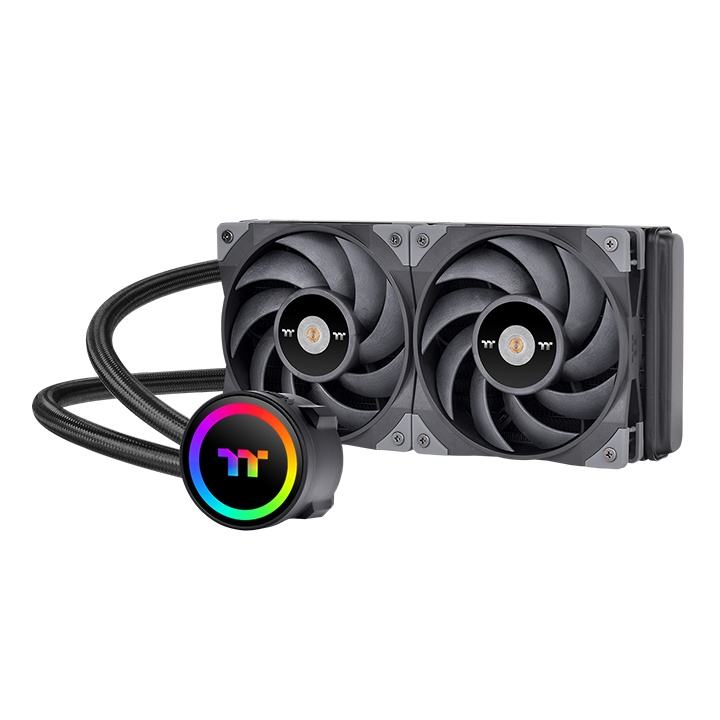

A legtöbb alkatrészt hűteni kell egy számítógépben, mivel az elektromos áram „átalakításával” és manipulálással hőfejlődés jön létre. A legnagyobb hőtermelő komponensek a processzor és a videókártya. A számítógép hűtésében sok tényezőt figyelembe kell vanni, mint például a környezeti hőmérsékletet, a páratartalmat, a számítógépház méretét és annak szellőzését stb. A számítógép megfelelő hűtése nagyban befolyásolhatja a számítógép teljesítményét pozitív irányban.
A legjobb hűtés elérésének érdekében az a legfontosabb, hogy a ház szellőzése jó legyen és hogy direkt hűtés legyen a legnagyobb hőtermelő komponenseken.
Megfelelő számítógépház és annak hűtése:
Ahhoz, hogy kiválaszthassuk magunknak a legjobb számítógépházat, olyat kell válasszunk, aminek sok szellőzőnyílása van és szerelhető rá hűtőventilátor. Annak érdekében, hogy elérjük a legjobb szellőzést, úgy kell „irányítanunk” a levegőt a házon keresztül, hogy az összes komponens körül legyen légmozgás. A legoptimálisabb az, ha alulról és elölről szívjuk be a levegőt, és felül és hátul fújjuk ki a házból, ez azért fontos mivel a hideg levegő lesüljed, még a meleg levegő pedig felemelkedik. A megfelelő rendszerhűtő ventilátort úgy bírjuk kiválasztani, hogy lehetőleg a ventilátor vezérelhető legyen és az átmérője a lehető legnagyobb legyen amekkorát be lehet szerelni a számítógépházba, ez azért fontos mert igy sokkal kisebb lesz a zajterhelés, mivel egy nagyobb átmérőjű ventilátornak sokkal kisebb fordulatszámon kell mennie ahhoz, hogy ugyan annyi levegőt megmozgasson, mint egy kisebb átmérőjű nagyobb fordulatszámon. A piacon jelenleg a legjobb halk ventilátorokat a Be Quite! gyártja, még a lejnagyobb teljesítményűeket pedig a Noctua.
Processzor hűtése:
A processzor hűtésének igénye változhat a felhasználásától és a környezetétől is. A legelterjedtebb processzor hűtők közé tartozik a Passzív hűtés, Léghűtés, Vízhűtés és Hőcserélős hűtés, az utóbbit ipari körülmények között használják leginkább.
Passzív hűtés:
A passzív hűtés az egyik leghalkabb hűtési megoldás mivel nem található benne mozgó alkatrész. A hűtő felépítése nagyon egyszerű, áll egy hő átvivő lap, ami általában rézből van, ezen keresztül vannak vezetve a hőcsövek, melyek szintén rézből vannak és üregesek, melyben egy különleges folyadék található. Ezek a csövek továbbítják a hőt a hőelvezető lamellákhoz, ezek nagy felületű általában alumíniumból készült lapok, amelyeken keresztül vannak vezetve a hőcsövek. A működése azon alapul, hogy a meleg levegő felfelé áramlik, igy amikor a levegő a lamellák között van, ott felmelegedik és felszáll, igy hűvös levegő kerül a helyére, és ez ismétlődik és igy távolítja el a hőt a processzortól. Létezik a passzív hűtésnek egy primitívebb formálja, amelyben nincsenek hőcsövek, hanem egy nagy fém vagy rézdarab van felbordázva, és ez szolgál a hűtésre. Ez a fajta hűtés nem a leg effektívebb, de olyan helyzetekben, ahol az a cél, hogy nagyon halk legyen a gép vagy nagy megbízhatóság kell, ez a legjobb megoldás mivel nincs benne mozgó alkatrész így nincs, ami meghibásodjon. A hátulütője az, hogy nagyon nagynak kell lennie a hőleadó felületnek, igy ezek a hűtők sokkal nagyobbak, mint az aktív hűtők. Az ára is magas mivel nagyon sok anyag van benne.
Léghűtés:
A léghűtés egy aktív hűtő, mivel található rajta mozgó alkatrész, ebben az esetben a ventilátor. A Léghűtés felépítése nagyon hasonló a Passzív hűtéshez, azzal a kivétellel, hogy egy ventilátor is található a lamellákon. Itt is megtalálható a hő átvivő lap a hőcsövek és az alumínium lamellák is. A ventilátor mozgatja meg a levegőt a lamellák között, és ez azért effektívebb mivel sokkal több levegő tud keresztüljutni a lamellák között, igy pedig növekszik az elvezetett hő mennyisége. Ez a legelterjedtebb hűtési forma az átlagos számítógépekben, mivel előállításuk olcsó és egyszerű az összeszerelése. Az előnyei közé tartozik a jó hűtési teljesítmény és az alacsony ár, de hátulütője az, hogy mozgó alkatrészt tartalmaz, ami meg bír hibásodni és emellett még hangos is tud lenni.
Vízhűtés:
A vízhűtés is az aktív hűtők csoportjába tartozik mivel a pumpa és a ventilátor is mozgó alkatrész. A működése sokkal összetetteb mint egy passzív vagy léghűtés. A legfőbb eleme a processzor block, amely egy réz vagy nikkel lap melyben nagyon apró bordák találhatóak, ezen keresztül nyomják keresztöl a hűtőfolyadékot, ebben az egységben található általában a pumpa is, de vannak olyan vízhűtőrendszerek is, amelyben külön található a pumpa. Ezek után a hűtőfolyadék szilikon csöveken keresztül jut a radiátorba, ahol oda, vissza nyomják keresztül kis átmérőjű rézcsöveken, amelyeken leadják a hőt a körülöttük lévő hűtőlamellákra. A radiátoron a ventilátorok fújnak keresztül levegőt, igy a hő távozik a radiátorban a hűtőfolyadékból és lehűlt formában tér vissza a processzorhoz újra. Ezek a hűtők nagyon nagy hőmennyiséget bírnak lehűteni mivel a víz és hűtőfolyadékok nagyon jó hőfelvevők. Nagy előnye a nagyteljesítményű hűtés viszonylag halkabb üzemelés. De hátránya a léghűtéshez hasonlóan a mozgó alkatrészek meghibásodási lehetősége és hangterhelés, emellett még egy olyan veszély is fennállhat, hogy megsérül a rendszer és lefolyik a hűtőfolyadék, mely problémákat okozhat.

Hőcserélős hűtés:
A fent említett hűtésekkel szemben a hőcserélős hűtés képes a környezeti hőmérséklet (pl. szobahőmérséklet) alá hűteni egy processzort (vagy akármilyen komponenst). Ezek nagyon komplex rendszerek és méretük is nagyon nagy, átlagos felhasználónak nincs szüksége ilyen nagy hűtési teljesítményre. Leginkább szerverek hűtésére vagy tesztelésre használják ezeket.
Videokártyák hűtése:
A legtöbb modern videókártya már előre felszerelt hűtéssel rendelkezik, melyeknek hűtési teljesítménye a videókártya hőtermelésére van méretezve. A videókártyákon nagy százalékban aktív hűtés található, melyeken több ventilátor is helyet kaphat. De vannak olyan kis teljesítményű videókártyák, amelyen csak passzív hűtés található. Emellett lehetséges olyan videókártyákat csinálni, amelyek vízhűtésűek, de mivel ehhez szét kell szerelni és át kell alakítani a kártyát így kevés ember próbálkozik meg vele, emellett garanciát is veszít. Habár manapság van már pár gyártó, aki gyárt vízhűtésű kártyákat, de nincs rá nagy kereslet mivel magas az áruk is körülményes a beszerelésük.

Összegző:
A komponensek hűtése nagyon fontos a legjobb teljesítmény elérése érdekében, ha egy számítógépházban nincs légmozgás a komponensek túlmelegedhetnek és sokkal korábban tönkre mehetnek. Igaz a legtöbb modern gép alkatrészben van túlmelegedés védelem, de nem érdemes kipróbálni a működésüket.